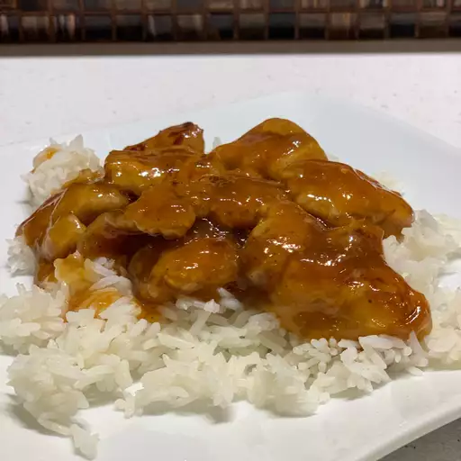

Home
Orange Chicken

Description
This recipe will help you create a delicous plate of orange chicken over rice. Hungry pandas beware!
Ingredients
Sauce:
- 1.5 cups of water
- 1/3 cup of rice vinegar
- .25 cup of lemon juice
- 2.5 tbsp of soy sauce
- 2 tbsp of orange juice
- 1 cup of packed brown sugar
- 2 tbsp chopped green onion
- 1 tbsp of grated orange zest
- .5 tsp of minced fresh ginger root
- .5 tsp of minced garlic
- .25 tsp of red pepper flakes
- 3 tbsp of cornstarch
- 2 tbsp of water
Chicken:
- 2 large skinless and boneless chicken breats, cut into .5 inch cubes
- 1 cup of all purpose flour
- .25 tsp of salt
- .25 tsp of pepper
- 3 tbsp of olive oil
Steps
- Combine water, rice vinegar, lemon juice, soy sauce, and orange juice
for sauce into a saucepan over medium-high heat. Stir in brown sugar, green
onion, orange zest, ginger, garlic, and pepper flakes; bring to a boil. Remove
from heat and cool for 10-15 mins
- Place chicken in a resealable plastic bag. Pour in 1 cup of the sauce, cooled.
Seal the bag, and refrigerate for at least 2 hours. Reserve the remaining sauce.
- Mix flour, salt, and pepper in another resealable plastic bag
- Remove chicken from marinade and place into the bag of seasoned flour.
Seal the bag and shake to coat.
- Heat the olive oil in a large skillet over medium heat. Cook chicken in
the hot skillet until browned on both sides.
- Remove to a paper towel-lined plate and cover with aluminum foil. Wipe out the
skillet.
- Pour reserved sauce into the skillet and bring to a boil over medium-high heat
- Mix together cornstarch and water until completely smooth. Stir into the boiling
sauce.
- Reduce heat to medium-low, add the chicken and simmer. Stir occationally until cooked
through. About 5 mins.
- Plate and serve over rice!